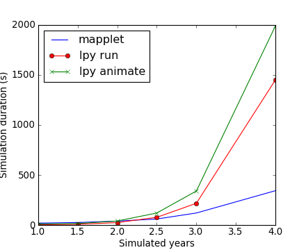
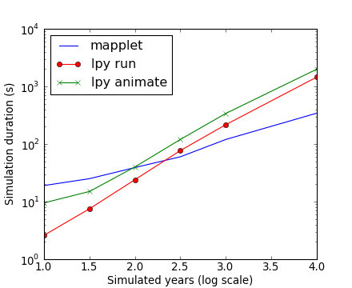

1.2. Performance¶
1.2.1. Code performance¶
- Stocatree is written in pure Python. Therefore, it is expected that simulations
- will be slower than those from MAppleT. In this section, we provide benchmark to compare the time needed to perform simulation with stocatree and MAppleT
Here below are the benchmark of MAppleT and Stocatree (in seconds) as a function of simulated years. Performances are not linear because number of elements is not:
| year | 1 | 1.5 | 2 | 2.5 | 3 | 4 |
|---|---|---|---|---|---|---|
| seconds | 19 | 25 | 39 | 60 | 120 | 343 |
| year | 1 | 1.5 | 2 | 2.5 | 3 | 3.5 | 4 |
|---|---|---|---|---|---|---|---|
| May/2010 | 2.6 | 7 | 22 | 70 | 167(3000) | x | 1630 |
| May/2010(no mecanics) | 1.6 | 5 | 12 | 39(2238) | 142(2450) | x | 1540(9450) |
| 1/Feb/2009 | 5 | 14 | 49 | 132 | 420 | x | x |
| 1/dec/2009 | 9 | 31 | 62 | 340 | 523(1059) | x | 2089 |
| animate(Nov/10) | 6.5 | 14 | 45(401) | 120(2533) | 332(2720) | 872(9649) | x |
| animate(8/10) | 10.5 | 22 | 62 | 166 | 332 | x | x |
| animate(5/10) | 25 | 55 | 171 | 400 | 990 | x | x |
import numpy
import pylab
years = numpy.array([1,1.5,2,2.5,3,4])
mapplet = numpy.array([19.,25.,39.,60.,120.,343.])
lpy = numpy.array([2.6, 7.5, 24, 77, 217, 1451])
lpy2 = numpy.array([9.5, 15, 40, 120, 340, 1990])
fig = pylab.plot(years, mapplet, years, lpy, 'or-',years, lpy2,'x-' )
l = pylab.legend(['mapplet','lpy run','lpy animate'],loc='best')
pylab.xlabel('Simulated years');
pylab.ylabel('Simulation duration (s)')
[`hires.png <..\plot_directive\inline/6a9fc28ff1.hires.png>`__, `pdf <..\plot_directive\inline/6a9fc28ff1.pdf>`__]

[`hires.png <..\plot_directive\inline/eabf4400d6.hires.png>`__, `pdf <..\plot_directive\inline/eabf4400d6.pdf>`__]

[`hires.png <..\plot_directive\inline/39e09ac9e9.hires.png>`__, `pdf <..\plot_directive\inline/39e09ac9e9.pdf>`__]

Section author: Thomas Cokelaer